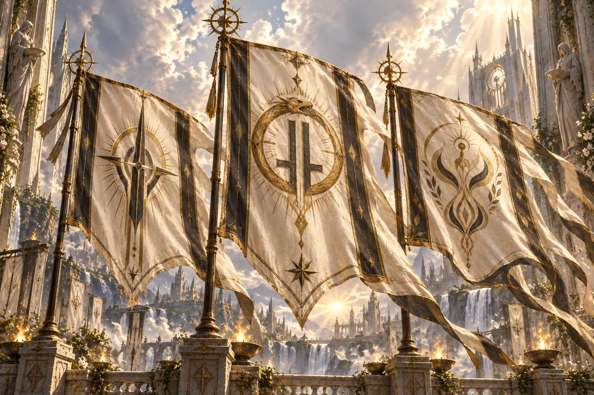

The Gods of Avara¶

Across the vast lands of Avara, many gods are worshipped, each commanding their own faithful, temples, and traditions. Kingdoms rise beneath their blessings, wars are waged in their names, and countless generations have lived and died believing in their divine authority. Yet among all the gods of Avara, there exists only one true divinity, embodied by two distinct beings sharing a single divine reality.
Avaron and Evarra.
Known simply as the Two, they are neither rivals nor opposing gods, but two inseparable aspects of the same divine truth. Avaron embodies the power to choose, to act, and to shape one's own destiny. Evarra embodies acceptance and becoming, the willingness to confront what one is and embrace what one may yet become.
Their teachings may appear contradictory, yet neither can exist in its fullness without the other. For one cannot truly choose without first accepting the world as it is, nor can one become something greater without possessing the will to change.
Two divine beings. One divine reality.
The Two, Spoken of as One¶
In Valerian tradition, Avaron and Evarra are called the Two: distinct divine beings, yet also one divine reality. They are not rival gods, and their faithful do not have to choose between them.
People reach for stories and simple words to speak of the Two. No single mortal explanation is treated as the whole of divinity.
Two Ways Through a Life¶
Avaron is associated with agency: the power to choose, act, and shape one’s relationship with the world. A saying commonly linked to Avaron is Take hold. It does not promise that every circumstance can be controlled. It asks what choices remain yours, and what you will do with them.
Evarra is associated with acceptance and becoming: the willingness to face what one is, and what one may yet become. A saying linked to Evarra is Let go. It does not mean surrendering to every force or giving up. It asks what must be acknowledged before change can begin.
The two teachings may seem to pull in opposite directions. One urges a person to act; the other asks them to face what cannot simply be willed away.
Yet neither is complete alone. To choose well, a person must see the world as it is. To become something new, a person must take part in the change.
The Paths Meet¶
Avaron and Evarra are often taught through the Seven Virtues: mortal disciplines meant to guide how people live and make their way through life. The Virtues are not separate revelations from the gods, nor a guarantee that every choice will be easy.
Some people find themselves drawn more strongly to one teaching for a time. A person may need courage to act, or humility to accept what has changed. But this is not a change of allegiance. The Two remain together, even when a person’s path leans more heavily toward one of them.
Valerian stories say that those who follow either teaching deeply enough may discover the other within it: agency requires facing reality, and acceptance may be the first act that makes change possible.
No story, saying, or teaching settles every question about Avaron and Evarra. They offer people a way to think about choice, change, and the life between them.
Avaron — The Hand That Chooses¶
Avaron is often imagined as a hand reaching for the reins—not because it can command the whole road, but because a life surrendered entirely to others is no longer being steered by its own keeper.
Take hold.
Avaron’s teaching asks what choices remain yours, even when the world has narrowed them. It does not promise that courage will make every obstacle yield, or that effort will spare you from consequence. It asks what you will do with the power you still possess.
In Avaronian stories, a person does not become themselves by waiting for the world to name them. They become themselves through the choices they make, the promises they keep, and the burdens they accept as their own. To choose is to take part in shaping a life.
But the hand that takes hold can close too tightly. Avaron’s teaching can be twisted into the belief that everything must be mastered: every fear conquered, every weakness cut away, every other person bent to one’s will. What begins as self-command can become domination. What begins as the courage to act can become the refusal to listen.
The path of Avaron is not the promise of control. It is the demand to answer for what you choose.
Evarra — The Shape That Changes¶
Evarra is often imagined as a shape changing beneath a hand: not erased, but becoming something it was not before.
Let go.
Evarra’s teaching asks a person to face what they are, what has happened to them, and what they may yet become. It does not ask them to welcome every wound or submit to every command. It asks them to stop pretending that change can be refused simply by refusing to look at it.
In Evarran stories, a person may lose a name, a home, or the life they expected to live. What remains is not always the same as what came before. To accept that truth is not to say the loss was right. It is to meet the self that survives, and decide what can grow from there.
But letting go can become its own danger. A person may surrender so much that nothing is left to choose, or change so often that they no longer know what they are becoming. Acceptance can be twisted into passivity; transformation can become a flight from every bond and every former self.
The path of Evarra is not the demand to disappear. It is the courage to face what is changing—and to take part in what comes next.